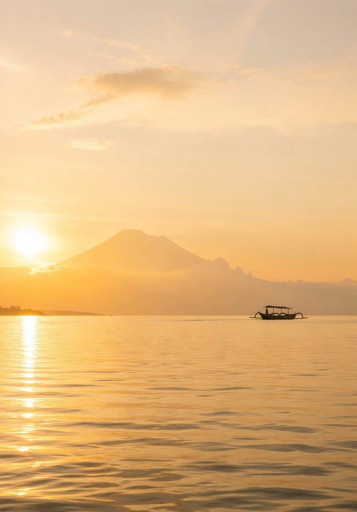
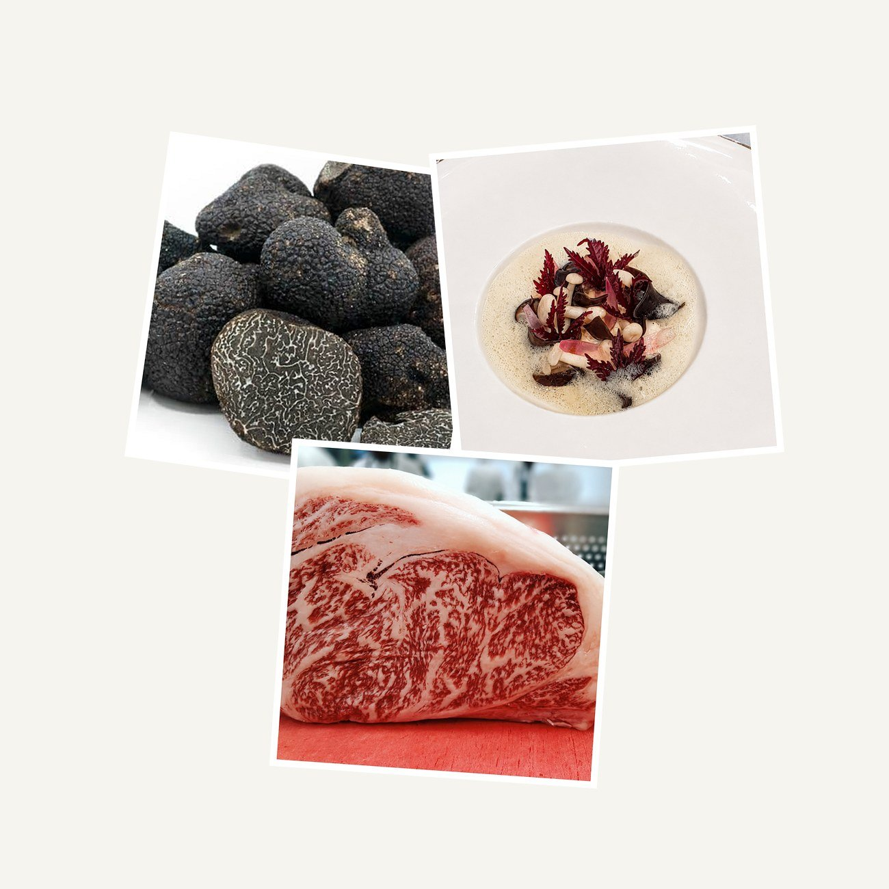
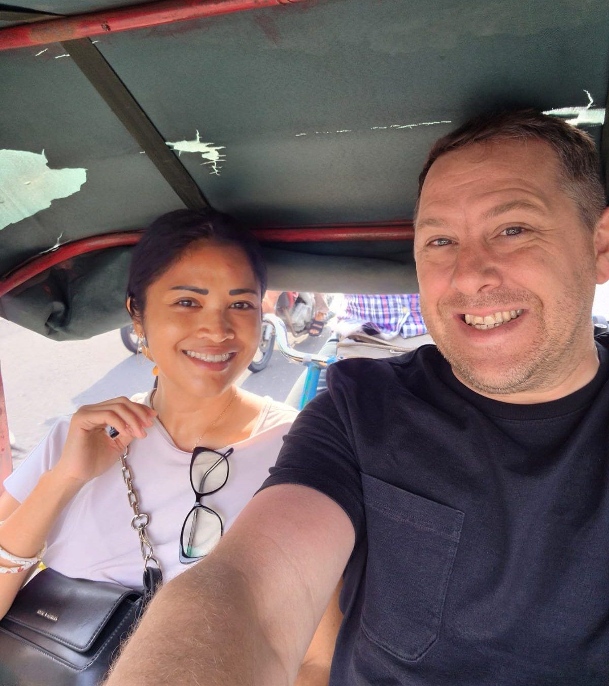
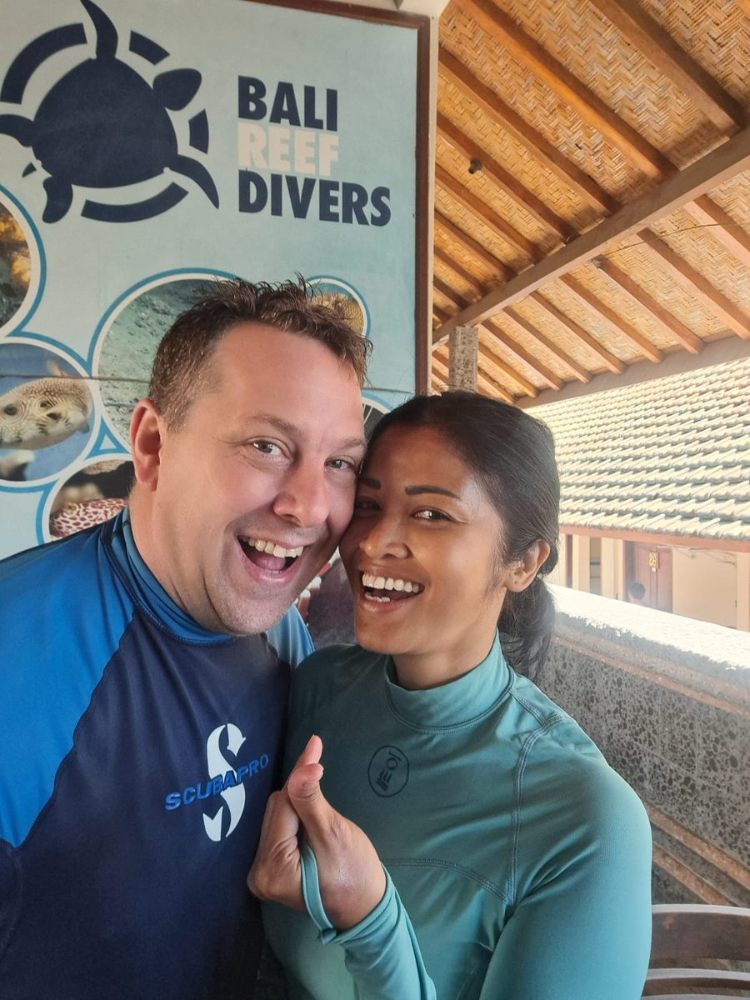

Private Dining · Culinary Events · Bali & Beyond
Private chefs. Culinary experiences.
Bali, Indonesia, and wherever you take us.

Yunic is owned and led by Yuli, the host who makes every gathering feel natural, warm and personal, together with Chef Nic Vanderbeeken, who leads the kitchen and the Yunic culinary team.
We do not arrive with a fixed answer. We become part of your holiday, your weekend or your occasion, and everything we do starts with the people sitting around your table.
01 — What we choose to do
Each begins the same way: a conversation, a setting, and the people you want around you.

Dive & Dine
For resorts, liveaboards and private charters, food that understands where you just came from.
02 — How we work
Tell us where.
Tell us when.
Tell us who’s coming.
If we cannot do it at our best, we say no, and point you to someone who can.
Then we listen.
We talk about the food, the setting, the reason for gathering, and the things that actually matter to you.
From there, Yunic shapes the experience.
No packages pushed on you.
No unnecessary theatre.
Just something considered,
personal and made for that moment.

Private Dinner Events
An extraordinary bottle. A truffle dinner. A birthday in a private villa. We build the evening around what brought you together. No packages. No standard menu.
03 — About Yunic

Yunic began with Yuli and Nic.
Yuli grew up with Indonesian food as part of everyday life: its flavours, traditions and the way food brings people together. She introduced Nic to much more than Indonesian dishes: the memories behind them, the importance of sharing, and an understanding of flavour that can only come from growing up with it.
Nic brought his European culinary background, technique and a chef’s way of looking at ingredients. More than a decade of living and cooking in Indonesia changed that perspective again.
They learned from each other.
That exchange became the foundation of Yunic’s approach to Indonesian food: rooted in Indonesia, shaped by their different experiences, and always respectful of where it comes from.
But Yunic isn’t only about food.
Both are certified divers. Nic has spent more than 26 years diving around the world and eventually brought Yuli into that world too. Travel, diving, markets, restaurants, people and places continue to shape how they think about food and hospitality.

What connects it all is simple:
They want people to have a great experience.
A dinner at home. A Yunic Rijsttafel. An ingredient-led menu. A canapé party. Dive & Dine. Or something completely different.
Together with the Yunic team, they listen first and then decide what makes sense.
And that is why Yunic doesn’t accept every inquiry.
There needs to be a connection between what you are looking for and what Yunic can genuinely bring to it. If there isn’t, we’d rather say so and, when we can, introduce you to someone who may be a better fit.
Perhaps not for everyone.
Maybe for you.
What people say
Yuli and the team didn't just cater our evening, they became part of it. From the first course to the last, everything felt personal, effortless and exactly right.— Toby Skard · Founder, Futurola USA — Los Angeles
What we are not